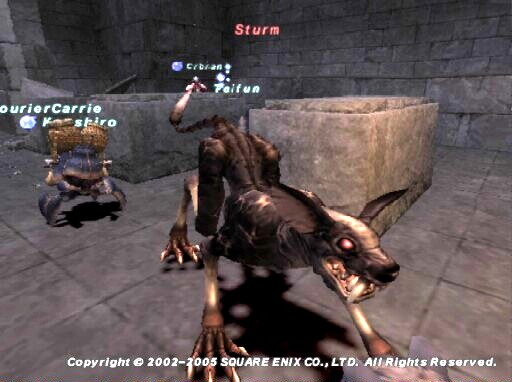

Level 75 reference · Zenith rules
This is the third Beastmaster Artifact Armor quest - otherwise known as AF3.
|


Image source
Walkthrough
- Talk to Dietmund (Door:Merchant's House) in Lower Jeuno (G - 11), with Beastmaster as your main job.
- Next take a piece of Mahogany Lumber to Osker in Upper Jeuno in the Chocobo stables. Obtain the Tamer's Whistle (key item) and head to Eldieme Necropolis.
- Enter Eldieme Necropolis via Beaucedine Glacier to Batallia Downs ("7" entrance) and go to the back left tomb at D-4.
- Clear the room and click on the sarcophagus to spawn Taifun and Trombe (tigers) and Sturm (an undead hound).
- You only need to defeat Sturm. If you charmed Taifun and Trombe (recommended) they will despawn after Sturm dies.
- Inspect the tomb again, watch a cutscene and receive your Beast Trousers.
Game Description
Client: Dietmund (Merchant's House, Lower Jeuno)
Summary:Something is amiss in Eldieme Necropolis. Observe the fiends and find a solution.
Adapted from Eden Wiki: A New Dawn · Contributors and history · CC BY-SA 4.0. Revision 9283. Layout, links and optional background text adapted for Zenith.